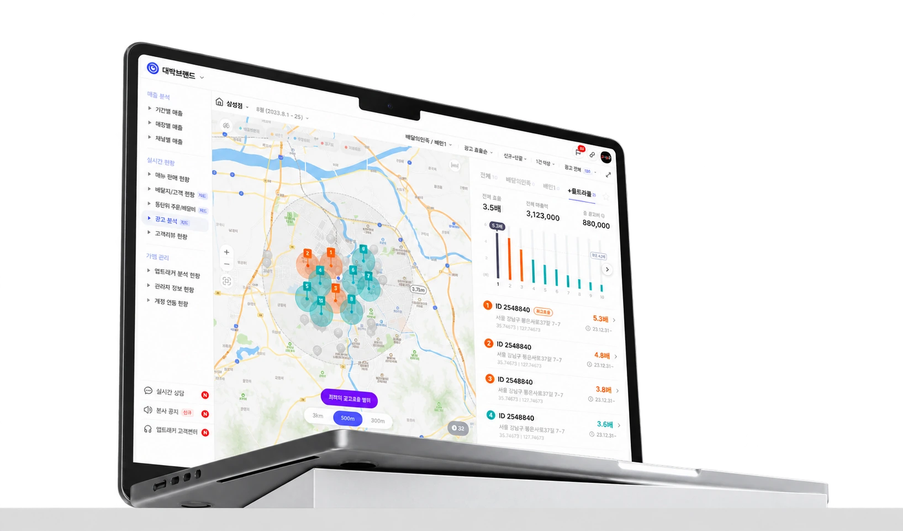
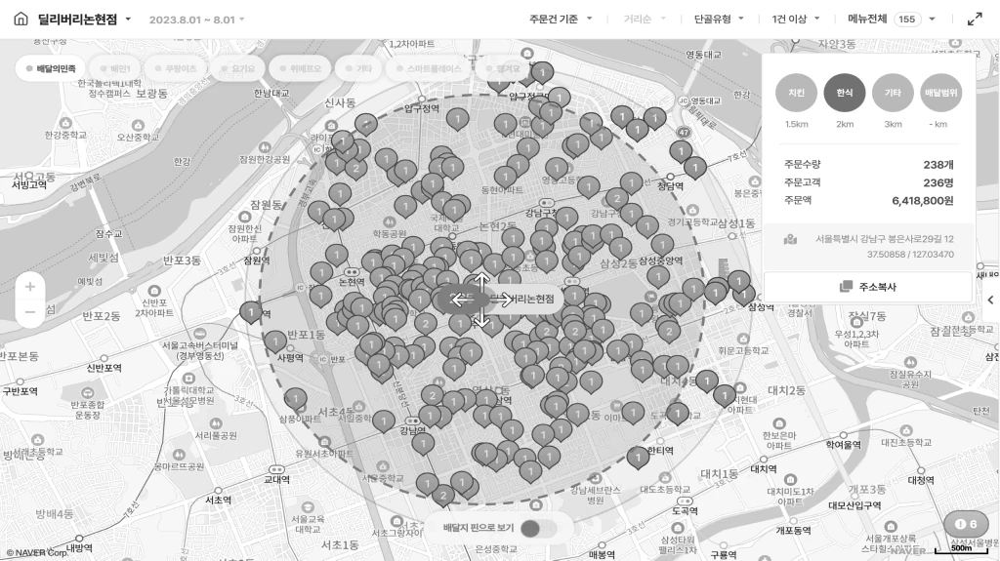
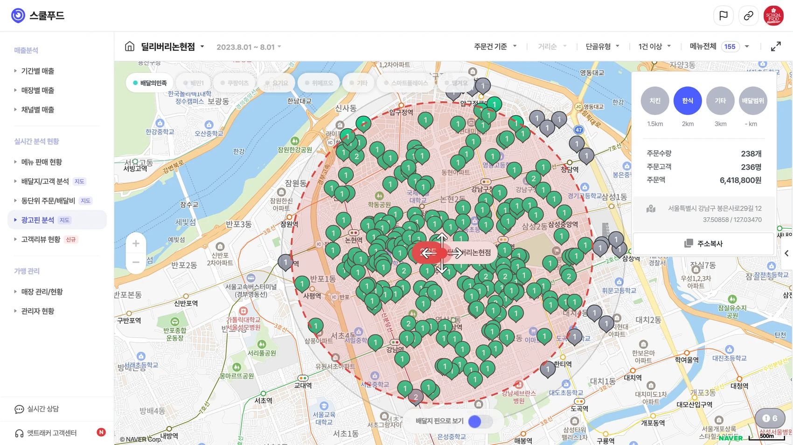
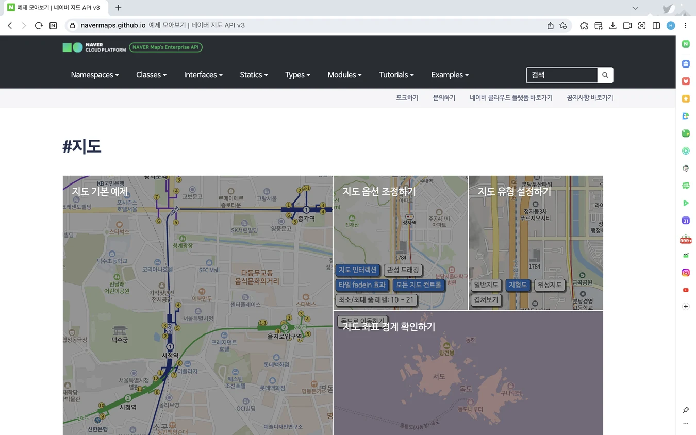
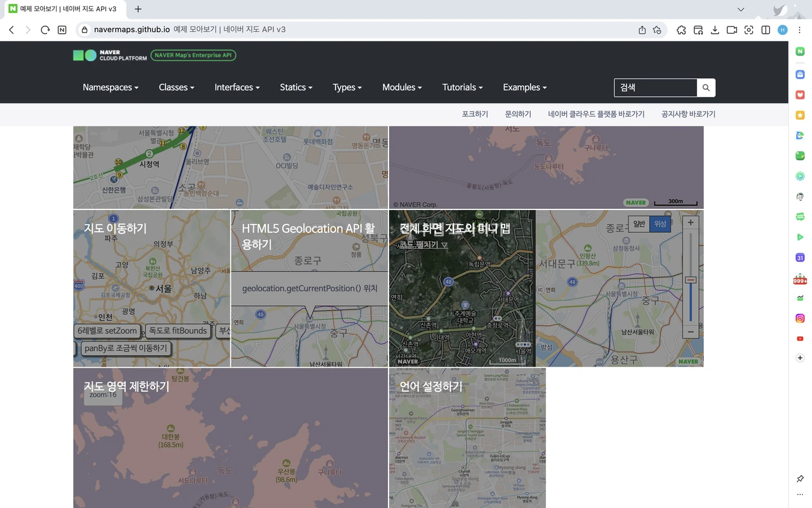

Overview
VOC로 제품이 놓친 사용자 니즈 발견하기
VOC와 영업 미팅에서 반복적으로 확인된 고객 요구를 바탕으로 광고 분석의 목적을 ‘새로운 위치 탐색’에서 ‘운영 중인 광고의 성과 분석’으로 전환했습니다. ROAS를 핵심 지표로 설정하고 지도 기반 탐색 환경과 스크래핑 데이터의 특성을 고려해 Web·App 경험을 설계했습니다. 개선 이후 잠재 고객사 7곳 중 4곳이 신규 가입했고 기존 고객사 21곳 중 17곳에서 긍정적인 반응을 확인했습니다. 또한 후속 니즈를 발견해 광고 집행 위치 결정을 지원하는 신규 서비스 논의로도 확장했습니다.
Attracker

Background
사용자들은 새로운 광고 위치 탐색이
아닌 사용 중인 광고 분석을 원했어요.
VOC 분석 결과 사용자의 니즈와 서비스가 지향하고 있던 목적 사이에 간극이 존재하고 있었고 신규 영업 미팅에서도 같은 요구가 반복되었으며 일부 잠재 고객사는 해당 기능이 제공되면 가입하고 싶다는 의사를 밝혔습니다.
이를 바탕으로 프로젝트의 필요성과 우선순위를 함께 논의한 결과 기존 고객의 반복된 요구를 충족하지 못하면 서비스 이탈로 이어지고 재계약에도 부정적인 영향을 주어 매출 손실로 이어질 수 있다고 판단했습니다. 또한 잠재 고객의 신규 가입 가능성을 확인하고 광고 분석 개선 프로젝트를 진행했습니다.
VOC를 통한 사용자 니즈 파악
가상2023년 1~6월 기능 개선 요청 VOC 현황
주요 요청 사항 → 운영 중인 광고의 성과 판단
비즈니스 영향 검토
- 01 고객 유지실제 사용자 이탈과 연결되는 문제인가?
- 02 매출 및 재계약필요 기능 부재가 재계약과 매출에 영향을 미치는가?
- 03 신규 도입 전환기능 개선이 잠재 고객의 가입 결정에 기여할 수 있는가?
Discovery
운영 중인 광고 성과를 파악하지 못해
조정이 필요한 광고를 찾기 어려워요.
사용자가 광고 성과를 통해 어떤 결정을 하고 싶은지 파악하기 위해 점주 3곳과 프랜차이즈 본사 3곳의 심층 인터뷰를 진행하고 성과를 확인하는 상황과 기존 업무 방식, 판단을 막는 요인, 실제 진행한 업무에 대한 공통된 의견을 정리하고 분석해 보았어요.
점주 · 3명 심층 인터뷰
어떤 광고를 유지·중단해야 할지 모르겠어요.
프랜차이즈 본사 · 3곳 심층 인터뷰
여러 지점의 광고 성과를 일일이 파악하기 어려워요.
Problem
광고를 유지할 근거도
문제 지점을 찾을 방법도 없었어요.
기존 광고 분석은 새로운 광고 위치를 찾는 데 맞춰져 있어, 이미 운영 중인 광고를 관리하려는 점주와 프랜차이즈 본사는 필요한 판단을 내리기 어려웠어요.


- 01운영 중인 광고의 성과를 비교할 수 없어 유지·중단을 판단하기 어려움
- 02지도를 수동으로 탐색하여 누락 데이터가 발생하고 문제 지점을 찾기 어려움
- 03프랜차이즈 본사가 여러 지점의 광고 현황을 개별적으로 확인하여 전체 성과 파악에 많은 리소스가 듦
Hypothesis
운영 중인 광고의 성과 비교와 지점별 현황을 제공하면 사용자의 탐색 시간을 줄이고 광고의 유지·중단에 대한 의사결정을 지원하고
기존 고객의 서비스 만족도를 높이고 광고 분석 기능을 요구한 잠재 고객의 신규 가입으로 이어질 것이다.
Strategy 01
광고 효과를 측정하는 최적화된 데이터 찾기
사용자들이 필요로 하는 현재 운영 중인 광고 성과를 제공하기 위해 광고를 운영했을 때 실제로 측정 가능한 데이터 항목을 먼저 파악했습니다. 앳트래커의 사용자인 프랜차이즈와 자영업자는 광고를 마케팅 관점이 아닌 비용 관점에서 광고의 지속, 중단, 확대를 판단하였기 때문에 투입 대비 성과를 보여줄 수 있는 지표가 필요했어요.
이에 투자 대비 매출 효율을 통해 광고 성과 판단을 할 수 있는 메인 지표로 광고효율(ROAS)을 설정하고 스크래핑할 수 있는 관련 성과 지표도 함께 노출하기로 정의하였습니다.
Strategy 02
지도 환경에서 필요한 데이터를 빠르게 탐색할 수 있는 옵션 찾기
울트라콜은 위치 기반의 광고 상품으로 서비스에서 사용 중인 네이버 지도 API 옵션이 적용된 실제 화면을 TEST하면서 사용자가 지도를 쉽게 컨트롤하고 원하는 데이터를 빠르게 찾을 수 있는 옵션을 검토했습니다.
Zoom Control 탐색 범위 조절
전체 광고 분포에서 관심 지역과 개별 광고로 탐색 범위를 단계적으로 좁힐 수 있도록 확대·축소
Marker Clustering 핀의 가독성과 성능 최적화
밀집된 광고 핀을 그룹화해 넓은 범위에서는 전체 분포를 파악하고 지도 렌더링 부담을 줄임
Map Filter 분석 조건에 맞는 데이터 선별
사용자별 성과 지표와 탐색 범위 조건에 맞는 필터 제공
네이버 지도 API


Strategy 03
스크래핑 데이터의 신뢰와 정확성
높이기
서비스 특성상 데이터를 실시간 API가 아닌 스크래핑 방식으로 수집하여 최신 데이터 반영이 지연되거나 일부 값에 오류와 누락이 발생할 수 있었습니다. 이에 발생 가능한 오류 패턴과 제약을 파악하고 수집 상태가 사용자의 광고 운영 판단에 미치는 영향을 검토해 데이터의 기준 시점과 확인 가능한 범위를 이해하고 수집 상태를 고려해 광고 성과를 판단할 수 있도록 설계했습니다.
스크래핑 데이터 상태별 대응 원칙
| 스크래핑의 제약 | 확인이 필요한 정보 | 대응 원칙 |
|---|---|---|
| 실시간 데이터가 아님 | 데이터의 기준 시점 | 업데이트 시점·출처 표시 |
| 수집 과정에서 오류 발생 | 현재 데이터 수집 상태 | 로딩·에러 상태 구분 |
| 일부 데이터 누락 | 확인 가능한 데이터 범위 | 누락 상태 안내 |
사용자가 데이터 수집 기준과 현재 상태를 이해한 뒤 성과를 판단할 수 있도록 대응 원칙 수립
Solution 01
지도와 정보 영역을 분리해 위치
기반으로 광고 성과를 빠르게 파악해요.
기존에는 운영 중인 광고별 성과를 파악할 수 없어 광고를 유지·중단할 결정 근거가 부족했고 지도 위에서 위치 커서를 직접 움직이며 수동으로 데이터를 탐색해 놓치는 데이터가 발생했습니다.
이에 지도 영역과 정보 영역으로 나누어 위치 기반으로 수치 데이터를 파악할 수 있도록 구조를 잡고 광고 효율을 핵심 판단 기준으로 설정하여 광고 효율이 높은 핀은 주황색, 낮은 핀은 청록색으로 구분했습니다. 정보 영역에는 상단에 전체 성과를, 하단은 광고별 효율·ID·주소·집행 기간을 제공해 운영 조정 대상을 선별하고 광고의 유지·중단을 검토하는 데 필요한 근거를 확인할 수 있게 되었습니다.
Solution 02
전체 현황에서 개별 광고까지 문제
광고를 빠르게 찾고 관리해요.
점주는 매장의 여러 광고를 비교하기 어려웠고 프랜차이즈 본사는 전지점의 광고를 개별적으로 확인해야 해 전체 현황을 파악하는 데 많은 시간이 필요했습니다. 이에 관리 범위와 분석 목적에 따라 탐색 구조를 구분했습니다.
점주 페이지에서는 전체 광고 현황 → 광고별 성과 비교 → 개별 광고 순서로 구성해 운영을 조정할 광고를 찾고 프랜차이즈 페이지에서는 전국 현황 → 관심 지역 → 지점별 성과 → 개별 광고 순서로 탐색 범위를 좁히도록 설계했습니다.
Solution 03
분석 목적에 따라 원하는 지표와 범위를 선택해 데이터를 확인해요.
기존에는 광고 위치별 매출액만 확인할 수 있어 노출·클릭·주문·광고 효율 등 운영 목적에 필요한 데이터를 비교하기 어려웠습니다. 이를 개선하기 위해 광고 성과 지표를 목적에 따라 선택하고 정렬할 수 있는 필터를 설계해 사용자가 원하는 광고를 빠르게 탐색할 수 있도록 했습니다.
지도 영역에서는 3km 범위에서 전체 광고의 분포와 효율을 파악하고 500m에서는 인접 광고와 주변 성과를 비교하며 300m에서는 특정 광고 주변의 성과를 집중적으로 분석할 수 있도록 구성하여 사용자가 분석 목적에 맞는 범위와 지표에 집중해 광고 운영을 판단할 수 있도록 했습니다.
Solution 04
모바일에서도 지도·데이터 탐색 흐름이 끊기지 않도록 최적화했어요.
광고 핀은 좌우 스와이프로 전환하여 여러 광고를 연속적으로 탐색할 수 있도록 했고 선택한 광고의 상세 정보는 바텀시트에 배치해 지도 맥락을 유지하면서 성과 데이터를 확인하도록 구성했습니다. 필터는 별도의 모달로 분리해 다수의 필터 옵션을 조작할 때 발생할 수 있는 오선택을 방지하고 선택 사항을 명확하게 확인할 수 있도록 행동 단계를 나눴습니다.
그 결과 사용자는 모바일 환경에서도 여러 광고를 연속적으로 비교하고 지도 탐색 맥락을 유지하면서 필요한 성과 정보와 필터 조건을 확인할 수 있게 되었습니다.
Results
긍정적인 고객 반응과 신규 가입 전환,
후속 제품으로의 확장 가능성을 확인했어요.
광고 분석 출시 후 고객 반응을 통해 운영 중인 광고의 성과를 제공하는 방향이 실제 광고비 관리와 운영 판단에 유의미하다는 점을 확인했습니다.
이는 광고 분석의 목적을 ‘새로운 위치 탐색’에서 ‘현재 광고의 성과 판단’으로 전환한 제품 방향이 고객의 핵심 니즈와 맞닿아 있었음을 보여주었습니다.
CUSTOMER IMPACT
57%
잠재 고객 신규 가입 전환
요청 기능을 확인한 잠재 고객사 7곳 중 4곳이 신규 가입을 완료했습니다.
CUSTOMER FEEDBACK
81%
기존 고객 긍정 피드백
기존 고객사 21곳 중 17곳에서 광고 효율을 쉽게 파악하고 운영 판단에 활용했다는 피드백을 확인했습니다.
PRODUCT OPPORTUNITY
NEXT
광고 위치 추천 서비스로 확장
‘다음 광고를 어디에 집행할 것인가’라는 후속 문제를 발견해 신규 서비스 논의로 이어졌습니다.